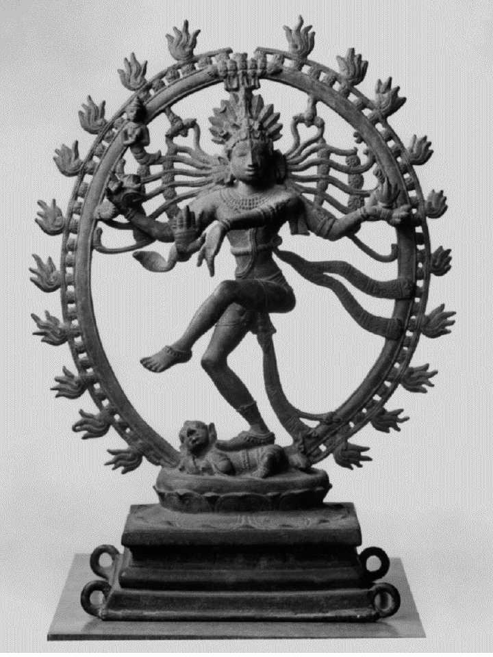

以法、因果报应和轮回转世为基本原则的种姓制度是印度宗教制度最基本的部分。最初，雅利安人信奉的典型的部落神都是自然力的化身，如因陀罗为雷和战争之神，阿耆尼为火神，苏摩为神圣的醉人的苏摩液之神。这些自然之神对畜牧者是很适合的，但是，当雅利安人定居下来改营农业时，他们就不得不转向新的神。因而，出现了印度教的“三大神”——造物主梵天、仁慈的保护神毗湿奴、强大的毁灭之神湿婆。这些新神，尤其是湿婆，与印度河流域一些遗址中的发现物惊人相似，这并不是偶然的。因为那时，雅利安人自然会占用当地古代农业文明在数千年中形成发展起来的一些宗教思想和习俗。
与这些新的神相伴而来的是权力愈来愈集中到祭司阶级即婆罗门的手中。这一变革可能也源于雅利安人之前的宗教传统。婆罗门在某些地区与印度文明中的土著宗教领导人发生交往，在交往中，大概学会了后者的巫术和习俗。不管在遥远过去的历史原型是什么，婆罗门有效地利用了他们精通的《吠陀经》即赞美诗。这些赞美诗在举行宗教仪式和献祭时被大声朗诵。它们通过世代口口相传而留存下来，它们在人们心目中是非常神圣的，所以被逐词逐音地熟记。作为这一宝贵遗产的保管人和传送者，婆罗门能够以高于世俗首长刹帝利的印度社会领导人的身份，坚持并实施自己的主张。
婆罗门由于他们的职责所具有的神圣性质而享有很多特权和豁免权。向婆罗门赠送礼物的人则得到保证，他们除了在来世外，还会在今生获得相应的报答。对“土地这种礼物”，评价最高，因为它“解除了赠送者的一切罪孽”。因此，婆罗门得到大量的地产，包括整座整座的村庄。除此之外，婆罗门还免交各种捐税，因为人们认为，婆罗门已以自己的虔诚行为清偿了这种债务。由于婆罗门是神圣不可侵犯的，所以他们不得被判处死刑或任何类型的肉刑。最后，有关法、因果报应和轮回转世的教义，实际上也为婆罗门控制人们的心灵提供了无法抗拒的手段。因为，如果一个人在生活中的地位是他过去所作所为的必然结果，如果一个人对来生的希望完全取决于他是否能忠实地奉行所规定的种姓义务而不管它们也许是多么麻烦或多么卑微，那么，这个世界上也就不会有什么个人做决断的机会了。
婆罗门的种种要求和强征勒索，是公元前6世纪和前5世纪印度进行宗教改革的一个因素。另一个因素是上文提到过的经济发展，经济发展造成一个富裕的商人等级即吠舍种姓，吠舍种姓对在其之上的两个种姓享有种种特权极为怨恨。最后，婆罗门与非雅利安人之间的关系非常紧张，因为虽然非雅利安人可以被吸收为印度教信徒，但他们对祭司居支配地位很不满。因此，现认为，佛陀所属的尼泊尔山区的释迦部落属于蒙古种族。这些因素相结合，促成了那些世纪里印度宗教界和知识界的动乱。人们开始要求自由——自由是一种比规定的宗教仪式和死板的教义更富有意义且令人满意的东西。
动乱的一个表现是出现了苦行主义的趋向。在最有活动能力、富有才智的人中间，有一部分人开始与社会疏远，沉浸于纯粹的内心反省。他们发明了训练或者“修炼”（瑜伽修习）心不弛散、最后进入出神或入迷状态的一些修行方法。那种出神或入迷的状态，神秘主义者称之为“启蒙”，无神论者称之为“自我催眠”。通过内心的反省和沉思，又发展起许多改革运动，其中最重要的是佛教。这一新宗教不能容纳种姓制度和婆罗门。它要求圣典能为所有信徒而不仅仅是处于上层的少数人所理解。佛教还废止了巫术、献祭和晦涩难解的经文。
佛教不但在印度，而且还在亚洲中部、东亚和东南亚成为一股强大的势力。不过，公元600年以后，佛教在印度失去地盘，最终，仅存在于其诞生国的少数几个地区。佛教在本土衰落的一个原因是，它未能为应付通常的生活中的危机做好准备，未能为出生、结婚、去世和俗人生活中其他一些关键性的转变提供种种仪式。相比之下，婆罗门则准备好了自己的种种礼仪；这一做法确保他们尽管遭到改革者们的攻击却仍能生存下来。此外，更重要的是，婆罗门自己也从事改革。他们在富于哲理性的经典《奥义书》中，提出了他们自己的通往解脱——通往自由和解放——的道路。
他们教导说，弥漫宇宙的最高精神是婆罗门——一个具备一切知识和知觉的生命体。他是宇宙灵魂和无孔不入的精神，其他一切都不过是一种幻觉。个人灵魂——“自我”——是上帝的一朵火花。它通过轮回不断地变换状态，直到经重新吸收为婆罗门而获得解放。识别个人灵魂和宇宙灵魂是献身于宗教的人通过修行、反省和退出感觉世界而试图达到的最终目标。因而，印度教信徒中追求真理的人能抛弃世界。虽然佛教作为一种虔诚的信仰已在印度消失，但由于它的基本信条已为印度教的反改革运动所吸收，所以它至今仍存在。

图53 印度南部出土的一尊动人的青铜湿婆雕像。湿婆是印度教最重要的神之一。这尊线条流畅、结构匀称的雕像描绘的是所谓的“跳舞的湿婆”正忙着跳毁灭世界同时又创造世界的舞蹈，是对世界万物永恒的流动的一种神话般的艺术表达（雕塑成像于13世纪，尺寸为33.5×24.8厘米）。